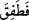

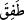
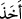
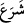
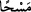
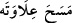
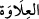
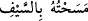
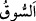
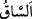
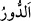
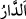
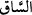
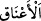
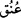
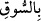

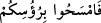
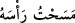
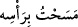
33. (O zaman:) Onları (atları) tekrar bana getirin, dedi. Bacaklarını ve
boyunlarını sıvazlamaya başladı.
“(O zaman:) Onları (atları) tekrar bana getirin, dedi.”
Bu ifâde Süleyman’ın (a.s.) sözüne dâhil olup önceki itirafı niçin yaptığını açıklar.
Muhataplar, kavminden atları kendisine sunan kimseler olup ifâde “şu atları bana tekrar
getirin!” demektir.
Süleyman böyle dedi ve hayvanların “bacakları ile boyunlarını sıvazlamaya
başladı.”
(__WORD__)’daki (__WORD__), Süleyman’ın emrine ne kadar hızlı bir şekilde uyduklarını göstermek
içindir. Ayrıca o anki durumun delâletine güvenildiği için ibârede yer verilmemiş olan
bir cümleyi açıklayan bir fâ-i fasîha’dır. (__WORD__), mukârebe fiillerindendir; yâni failin fiili
gerçekleştirmeye başladığını ifâde eder ve “başladı” anlamına gelen (__WORD__) ve (__WORD__)
anlamındadır. Mukârebe fiillerinin haberi de genellikle fiil-i muzârî olur. (__WORD__) ise
mukadder bir fiilin mef’ûl-i mutlağı (masdariyyet) olarak mensuptur. Ki bu mukadder
fiil aynı zamanda (__WORD__)’nın da haberidir. “Mesh” ise eli bir şeyin üzerinden geçirmek
demektir. Müfessirlerin çoğunluğu (cumhur), burada “mesh”ten murâdın “kesmek”
olduğu görüşündedir. Zira bu anlam Arapça’daki (__WORD__) sözünden alınmıştır. Yâni
“boynunu vurup başını kopardı” demektir. (__WORD__), baş yahut boynun en yukarı kısmıdır.
el-Müfredat’ta der ki: (__WORD__) yâni “kılıcımla okşadım, dokundum” ifâdesi
boynu vurmaktan kinâyedir.
(__WORD__), (__WORD__) kelimesinin çoğuludur. Tıpkı (__WORD__) ve (__WORD__) kelimelerinde olduğu gibi. (__WORD__), iki ökçenin yâni diz ile ayak ökçelerinin arasındaki kısımdır. (__WORD__), gerdan
olarak da ifâde edilen (__WORD__) kelimesinin çoğuludur. (__WORD__) ifâdesindeki (__WORD__) harfi, tıpkı (__WORD__) (el-Mâide 5/6) âyetindeki gibi ziyadedir. Çünkü (__WORD__) demek de (__WORD__) demek de aynı anlama gelir.
Mânâ şu şekildedir: Adamları Süleyman’ın emri üzerine atları tekrar getirdiler; o da
adamlarıyla birlikte hayvanların inciklerini ve boyunlarını kılıçla okşamağa, yâni
boyunlarını vurmağa ve ayaklarını koparmağa başladı. Ya da bir kısmı boyunlarını
vururken bir kısmı da bacaklarını koparmağa başladı. Süleyman bütün bunları,
kendisiyle Hakk’ın arasına girmiş bulunan perdeyi kaldırmak ve bu muhteşem
hayvanları bırakıp kendini bunların sevgisinden soyutlayarak istiğfar etmek sûretiyle
Allah dışındaki alâkalarını yok etmek için yapmıştı.
Âyette Allah dışındaki varlıklara karşı beslenen sevgilerin kişiyi Allah’tan
alıkoyacağına, perdelenmeye sebep olacağına ve Allah dışındaki bütün sevgililerin bizi
O’ndan bir an bile alıkoyması durumunda “Allah’tan başka ilâh yoktur!” ifâdesindeki
“yoktur!” kılıcıyla bunun bir çaresine bakmamız gerektiğine işâret edilmektedir.
“Lâ” kâinâtı içen bir timsahtır,